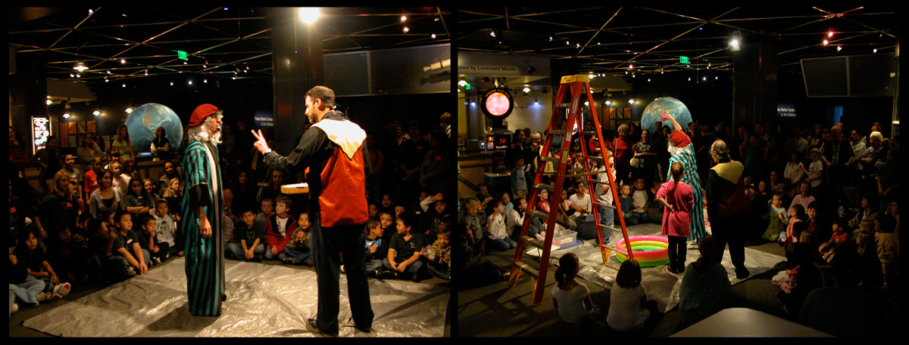
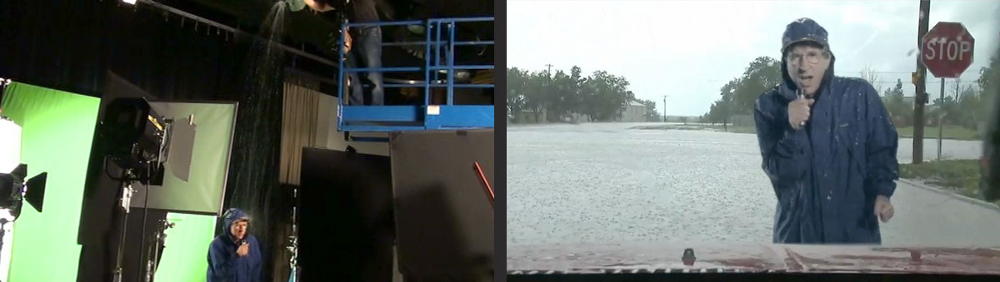
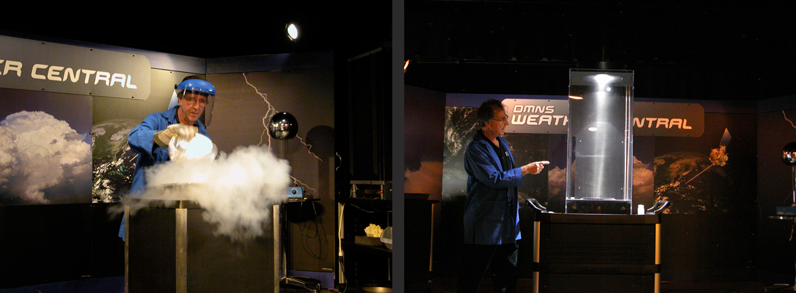
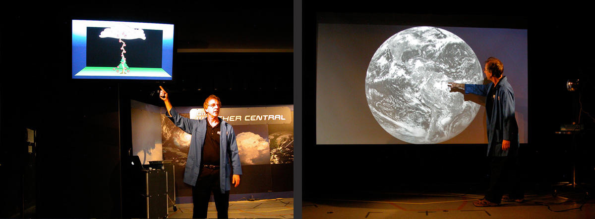
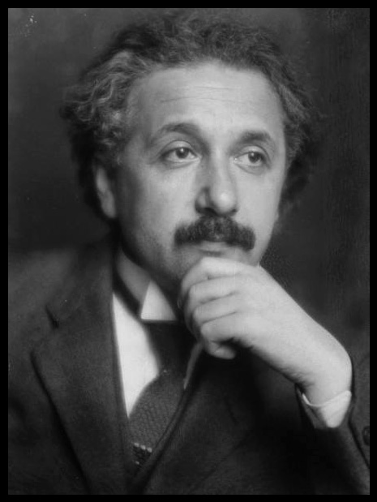

The value in hiring a good consultant is not just what I can do.
It is what you and I can do together when we bring out the best in each other.
My job as a program developer is not simply to write shows that I can perform.
It is to create programs that you and your staff can perform.
Program Development
Museums are no longer places simply to impart information. They are places designed to IMPACT visitors (on-site or virtually) in positive ways. My expertise is in impacting visitors through the seamless integration of programs and exhibits.
Programs in museums are a relatively new phenomenon. Historically, museums were places where objects were preserved and displayed. Simple signage told what the objects were, where they came from, and that was about it. That is no longer enough. Modern museums should be places which fire the imagination. Places where curiosity is given full reign. Places that are alive with wonder. The question is how do you make that happen? Museum programming seamlessly integrated with exhibits in an evocative environment is how you make that happen. The question I always ask is this. What is the IMPACT that I want to have on visitors? What do I want them to know ? To feel ? And, to do ? And, how can I create an integrated program to have that impact? Of course, it is not enough to write a show that only I can perform. I have over 40 years experience as a professional performer, both in museums and in the entertainment world. I have learned how to have the maximum impact on an audience. My strength is that I can take what I’ve learned on stage and can transform it into programs where the impact on the audience is built right into the script. ( On this web site I am not representing the Denver Museum of Nature and Science. I speak only for myself. That said, my work at DMNS is part of my résumé.)
Case Study 1: Galileo and the Leaning Tower of Pizza 
In 2009, I wrote Galileo and the Leaning Tower of Pizza , at the Denver Museum of Nature and Science. It is a “recreation” of Galileo’s famous heavy and light ball experiment to see which would fall faster in a gravitational field. My goal was to write a show that would be funny and would mentally transport the audience from a museum setting to a street-theater or circus setting. That is what I wanted them to feel, so that’s where I started the show creation process. (At other times, I might start the process with the teaching points, but, I chose not to start there for this show.) Drawing on my experience as an ex-street performer I used tricks of audience engagement, techniques to focus people’s attention, proven gags to make them laugh, and comical props and costumes which would instantly say – this show is going to be different and this show is going to be fun. Instead of heavy and light balls I used water balloons. The bottom line, let’s not forget, is that this is an educational show in a museum, so it needed strong teaching points. Not lots of teaching points, but strong ones. The main teaching point is that if you are a true scientist, as Galileo was, you must rely on experimental evidence. The second teaching point is that heavy and light balls fall at the same rate. I then structured the show in two ways simultaneously – how to reinforce those teaching points and how to give the show an entertaining arc (including a protagonist, meaningful full-audience participation, a conflict, and a climax.) And, of course, it had to include an actual ball-dropping experiment. Or, in this case, water balloon dropping. It also had to be satisfying to the audience. If you’re going to brandish water balloons, then water needs to splash everywhere at the climax. (Or, at least give that impression.) The key is that by building all of those elements into the actual structure of the show, then any of our performing staff could do it , not just me. The result is a solid show with strong educational content that is extremely funny to the visitors. Best of all, no matter who on the performing staff does the show, it always has those impacts on the visitors.
To show you what I mean, you can watch two different clips from the Galileo Show performed by two different casts. CLICK HERE
{kind=link}
Case Study 2: DMNS Weather Central   
We decided to do a program that would explain the dynamics of severe thunderstorms in Colorado. What did I want them to know ? The science of how thunderstorms occur. What did I want them to feel ? That there is a logic to thunderstorms (and, a logic to science, in general.) Thunderstorms are not just random events. What did I want them to do ? Take safety precautions when real thunderstorms occur. When breaking down the challenge I realized that we needed a strong storyline to hold the audience’s attention. To do that, we imagined that we were following a thunderstorm brewing outside the Museum and created video clips of weather announcers and scientists reporting on the progress of the “storm.” What’s more, since we couldn’t simply wait until the weather was right to run outside and film, we needed to do this all with green screens. (These pix are from some of our prototype tests. Final production video was shot with actual scientists, educators, and TV weathermen.)
We needed the science to be real and tangible. I spent many days researching; talking to scientists at the National Center for Atmospheric Research in Boulder, at a local TV station, and with our own staff scientists to make sure that I clearly understood the science and could interpret it correctly for our visitors. (My background in math and physics came in handy.) Since this was to be a live show, we had to create science demonstrations to be done on stage that would clarify what was going on in our imaginary storm.
We also needed the science to be understandable. So we created “mental image slides” to replicate in images what the performer was saying in words.
Finally, we needed it all to run smoothly. That meant integrating video cues, lighting cues and screens going up and down into a multi-media control system. Blocking the entire show so that wires wouldn’t cross and that stage actions would seem effortless. And, double-checking that the science was all correct. The result: DMNS Weather Central .
{kind=link}
{kind=link}
{kind=link}
Case Study 3: The Gravity Demo

That was the challenge – to create a teaching tool that would do justice to the spirit of General Relativity, be accessible and intriguing to our visitors, and well within the skill sets of our volunteer interpreters.
I had thought about this for years. In the real world, Einstein’s space-time takes place in 4 dimensions, but we see only 3. One of those dimensions is somehow “suppressed.” By analogy, we needed a way to suppress the 3-dimensional plastic gravity well down to only 2 dimensions in a way that was clear to visitors. My solution was to mount a video camera directly above our gravity well looking straight down into it and projecting the image onto a flat screen. A ball traveling around the gravity well would look like it was making a 2-dimensional orbit on the flat video screen.
Working with our team of scientists and prototypers, we added projectors to create grid lines, lycra sheets to demonstrate the “bending of space-time”, and special software which left a visible trace to show the orbits of the balls. In the hands of our volunteer interpreters, even the youngest visitors get an aesthetic experience, and our more knowledgeable guests gain insights into what many people call the most important scientific theory of the 20 th century. This is a very popular exhibit.
{kind=link}
If all of this sounds a little vague, you can watch a short movie HERE .
I can provide high-impact / high-education shows for your museum, too.